Henry Paulson, former U.S. Secretary of the Treasury during the 2008 Financial Crisis, once stated, "Economic growth and environmental protection are not in conflict. Instead, they are two sides of the same coin, essential for long-term prosperity. (Thomas, 2023)" This idea, emerging prominently in the 1990s alongside economic models like the triple bottom line (Correia, 2019), advocates for integrating social impact and environmental well-being with economic stability rather than prioritizing one over the others. Such models have increasingly influenced government policies, consumer behaviors, and business practices in the twenty-first century (Correia, 2019).
To assess the extent to which current economic models embody the principles of environmental economic growth, a comprehensive observational study was conducted on growth models from 1970 to 2022, using a random sample of countries. This study collected data on each country's percentage of natural resource rents (as a proportion of Gross Domestic Product) and the percentage of natural resource depletion (relative to Gross National Income) per year. These figures were then compared to the country's Gross Domestic Product per capita for the corresponding year. Analyzing the relationship between profits derived from natural resource extraction (through resource rents) and the impact of resource depletion on an average individual's wealth within a country can provide insights into how effectively current economic models balance economic development with environmental stewardship. This comparison aims to highlight whether increased economic prosperity aligns with sustainable resource management or if it comes at the cost of environmental degradation, thus testing the practical application of integrated growth models like the triple bottom line in contemporary economic strategies. Conclusions made by this study can contribute to the revaluation or continued reliance on current economic models in regards to tandem economic growth and environmental protection. These improvements can improve the natural and economic environments for humans, with a potential in inducing a more healthy, stable and prosperous world.
Economic growth models are vital to the analysis and overall enhancement to consumption/production systems as well as providing a framework for understanding the dynamics of income distribution and poverty reduction in various economies (Sharipov, n.d). These models help policymakers forecast future economic conditions and plan accordingly, facilitating better decision-making in areas such as fiscal policy, investment incentives, and social welfare programs (Sharipov, n.d). Examples include Solow’s Model of Long-Run Growth, which emphasizes the role of technological progress and capital accumulation. It suggests that sustained economic growth is largely driven by technological innovation, which increases productivity. A key insight from Solow’s model is that economies tend toward a steady-state growth rate, which can only be altered by changes in the savings rate, population growth rate, or technological advancements (Solow, 1959).
This understanding has led numerous economists to evaluate the trend of steady state growth in terms of other factors, such as demographic changes, and political stability in nations throughout the world (Fend, 1997). Using similar concepts, further research can be explored, such as in the area of natural resources, in order to determine its effect on an economies growth and/or individual prosperity.
Natural resource economics is defined as the application of economic principles to the management and conservation of natural resources. It aims to balance the exploitation of natural resources for economic gain with the need for environmental conservation and sustainability (Ahmad, 2023). This field is crucial for global wealth as it provides insights into how resources can be managed to support long-term economic growth and stability without depleting the natural capital (Ahmad, 2023). Natural resource economics evolved from classical economics, focusing initially on how land and its natural endowments contribute to economic prosperity. Over time, the scope broadened to include a wider array of resources and more complex considerations such as environmental impacts, renewable vs. nonrenewable resources, and global economic interactions. The primary objectives of natural resource economics include promoting efficient resource use, minimizing environmental degradation, and ensuring that resource extraction does not compromise the needs of future generations. Key principles include the valuation of natural resources, the economics of externalities associated with resource extraction, and the implementation of policies such as taxes, quotas, and licenses to correct market failures (Ahmad, 2023).
A significant concept in environmental economics is the "resource curse" hypothesis (Ahmad, 2023), which suggests that countries rich in natural resources may experience slower economic growth due to factors like political instability, corruption, and neglect of other economic sectors. The shift towards sustainability and the integration of renewable energy sources into economic models represent modern approaches to overcoming the challenges identified by this hypothesis, thus further supporting the utilization of environmental economic practices, which this paper hopes to support.
Understanding the impact of natural resource depletion on economic sustainability requires precise metrics that can quantify both the extent of depletion and its economic consequences. Commonly used metrics include natural resource rents, which represent the revenue derived from natural resource extraction after the deduction of costs. These rents can be a valuable indicator of the economic value being extracted and potentially lost. Additionally, resource depletion rates, which measure the speed at which resources are being consumed relative to their availability, provide crucial insights into the sustainability of current consumption patterns.
A pivotal study by Liang, H., Shi, C., Abid, N., & Yu, Y. (2023) titled "Are digitalization and human development discarding the resource curse in emerging economies (Liang, 2023)?" explores the intersection of technology, human development, and resource management. This research contributes significantly to the discourse on natural resource depletion by examining whether advancements in digital technologies and improvements in human development indices can mitigate the adverse effects traditionally associated with the resource curse in emerging economies. The study utilizes a comprehensive dataset spanning from 1990 to 2020 and employs advanced econometric techniques, including the method of moments quantile regression, to analyze the relationships between digitalization, human development, and natural resource management. The authors found that digitalization has a dual role. On one hand, it enhances the efficiency of resource use, reducing wasteful extraction and consumption. On the other hand, increased digital connectivity enables better monitoring and governance of resource extraction processes, leading to more sustainable management practices.
Furthermore, the study underscores the importance of human development — measured through education, health, and income levels — in enhancing the capacity of societies to manage their natural resources more effectively. Improved human development correlates with higher levels of awareness, better regulatory frameworks, and more sustainable consumption patterns.
The findings from Liang et al. (2023) suggest that emerging economies can indeed counteract the negative impacts of the resource curse by fostering digitalization and promoting human development. For policymakers, this underscores the importance of investing in technological infrastructure and human capital as part of a broader strategy to manage natural resources sustainably in terms of natural resource rents and natural resource depletion. These investments not only support economic growth but also enhance the resilience of these economies to the potential pitfalls of resource dependency.
The economic impact of natural resource depletion is profound, influencing both short-term economic benefits and long-term sustainability. In the short term, resource extraction can spur economic growth, providing immediate revenue and employment. However, the long-term effects are often detrimental, leading to economic instability, environmental degradation, and reduced quality of life (Lv, 2023). This presents a significant challenge in managing the economic consequences of resource depletion effectively.
Different regions experience the impacts of resource depletion uniquely as well, shaped by their economic structures, governance levels, and environmental policies. Globally, the challenge is interconnected with issues of economic inequality and environmental sustainability, requiring cooperative strategies and international agreements to address the complexities involved. For example, a critical study by Gao, D., Li, Y., & Tan, L. (2023) titled "Can environmental regulation break the political resource curse: evidence from heavy polluting private listed companies in China " examines the intersection of environmental regulation and resource depletion (Lv, 2023). The research focuses on heavy polluting companies in China, a significant concern given the country's rapid industrialization and extensive natural resource usage.The study employs an innovative approach by integrating political aspects into the analysis of environmental regulation's effectiveness. It finds that stringent environmental regulations can mitigate the adverse effects of the resource curse, particularly in contexts where political incentives align with long-term sustainability goals. In China, the enforcement of strict environmental standards has shown potential in reducing the negative impacts associated with the resource curse among heavily polluting industries.
The findings from Gao et al. (2023) suggest that effective environmental regulation, combined with robust political commitment, can serve as a crucial tool in breaking the cycle of the resource curse. For policymakers, especially in emerging economies rich in natural resources, the study underscores the importance of designing and implementing environmental policies that are not only strict but also align with broader economic and social objectives.
Due to the undeniable benefits of natural resource economics and the disincentives of non-integration of significance, it is clear that a country's adaptation to these practices is vital for the growth of their country and the economic prosperity of their people. By managing resources efficiently, nations can ensure environmental sustainability and economic stability, which are critical for long-term development. These strategies not only bolster economic growth but also help in mitigating the adverse impacts of resource depletion, thus aligning economic objectives with environmental sustainability. However, further research needs to be completed in order to evaluate the impact that current models have (in relation to natural resource usage) on the wealth of individuals, which is what this current study aims to answer.
In order to assess the means in which the revenue of natural resource extraction or the total rate of natural resource depletion affects an individual's wealth in global economics, an extensive economic observational study was conducted on growth models from 1970 to 2022, using a random sample of countries from the available data from The World Bank database (Worldbank, n.d). It is hypothesized that due to the current practices of human consumption and production, the logarithmic natural resource values will correlate with the GDP per capita of a country.
A total of 196 data sets for countries and territories around the world were available, so a representative random sample of approximately 10% of data, or 18 distinct countries, was used for the comparison analysis. 18 was chosen since it is a large enough sample size to reduce variability without being too large for inference (>10%). The random set of countries was calculated by number assignment to each country (1 - 196 based on alphabetical order). Using a random number generator, 18 numbers between 1 - 196 with no repeats were generated and the representative countries were chosen. The following countries were the resulting sample for the observational study: Iraq, Zambia, Pakistan, Philippines, Hondouras, Panama, China, Gabon, Peru, Morocco, Congo Republic, Saudi Arabia, Portugal, Mexico, Luxembourg, Finland, Germany, and Canada. These countries a random representation of global states, so therefore they also represent a diverse amounts of government types, geographic locations, ethnic populations, sizes as well as many other factors that may potentially contribute to the conclusions in this study, therefore choosing a large random and diverse sample helps reduce both variability and bias within the study.
Using The World Bank database data on GDP per Capita (2015$) (Worldbank, n.d), Total Natural Resource Rents (% of GDP) (Worldbank, n.d) and Adjusted Savings: Natural Resource Depletion (% of GNI) (Worldbank, n.d), individual Google sheets spreadsheets were created for each country utilizing the available data from the preceding in the range of 1970 to 2022. Although the range of the years may be odd, this was done to utilize all available data to reduce the potential variance within the study. Because a logarithmic regression model is being utilized in this study, each data set also had a corresponding logarithmic value, calculated by taking the natural logarithm of each data point for each year.
Since both explanatory variables (log resource rents and log resource depletion) and the response variable (log GDP per capita) are all quantitative variables, scatter plots comparing the values are composed for data analysis. These models were compiled using the programming language of R and further qualitative and quantitative analysis (demonstrated in the results section of the research) were completed using the program as well.
Although multiple trials of this observational study would increase the validity of the conclusions found, due to time constraints and the significant amount of data within the sets and of time to build and edit regression models, for the scope of this study, multiple trials were not able to be completed.
A comprehensive overview of the complete data and methodology process is organized in Figure 1 below.
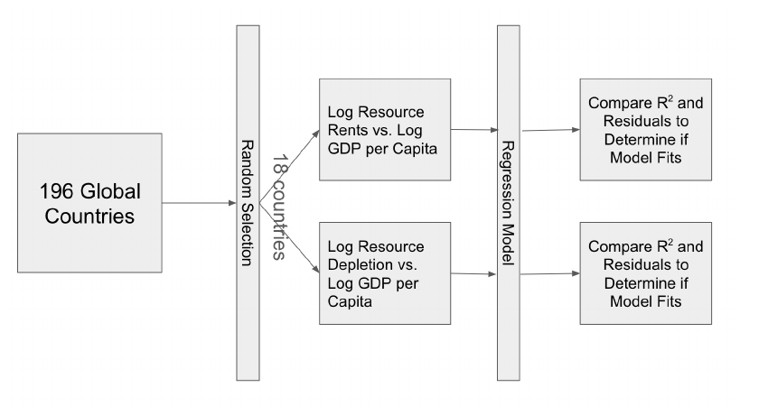
For each country, a scatter plot was created using the Total Natural Resource Rents Percentage (of GDP) versus GDP per Capita and plotted on a logarithmic scale in R. Regression lines were produced for each country as well as characteristic equations and R2 values respectively. See Appendix A for the full matrix of Rents vs. GDP plots.
Once all scatter plots and logistic regression models were completed, each calculated R2 was compiled into a histogram demonstrating the distribution of R2 values for their respective models in all of the samples, represented in Figure 2. A density curve for the histogram was produced in R and is also shown. The histogram shows an approximately skewed right distribution, with a center at approximately 0.0 to 0.1. The range is very large for this case, with the maximum value in the 0.6 to 0.8 range and the minimum in the 0.0 to 0.1 range. The data is very spread, with data filling every value between 0.0 to 0.8 except that of 0.6 – 0.7 where there is a gap. With a calculated mean of approximately 0.183 and a median of 0.075 as well as the plot, it can be concluded that the logarithmic model between the Total Natural Resource Rents Percentage (of GDP) versus GDP per Capita does not support a correlation between both variables. According to statistical convention, typically a R2 value of 0.3 is enough to keep a regression model for a scatter plot to prove correlation. However, on average only 0.1 to 0.2 R2 are represented in the sample, which means that approximately 10% to 20% of variance in logarithmic GDP per Capita can be explained by logarithmic total natural resource rents. This range of values is very small, so the model can not be considered to be very trustworthy. Since the median lies on the values 0.0 to 0.1, which represents 50% of the values, the majority of the values align with non-significant values of R2. These conclusions show that the logarithmic regression model does not show significant correlation between the natural resource rents and GDP per capita within global nations economic models.
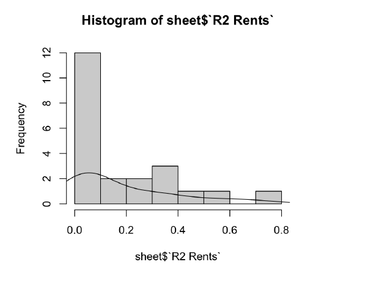
Residual plot analysis was also completed for each logistic regression model for each country. See Appendix C for the full matrix of Logistic Regression Natural Resource Rents Residual Plots. Many of the residual plots show random distribution and scattering of points, including the countries of Iraq, Zambia, China, Gabon, Peru, Morocco and Germany. However, the rest of the residual plots show clumping centered around certain locations, significant outliers that do not follow a pattern of randomness and patterns that follow certain shapes within the charts. This suggests that for the countries not included above, it is most likely that the logistic regression model is not likely a good fit for the correlation between the data and is not suggested to be used in further analysis. The good fitting residual plots for the countries listed above suggests a possible fit for the model, but a critical value (possibly another variable or a more complex logarithmic relationship) is needed for the model measure of fit to increase.
With low mean and median R2 values demonstrated by Figure 2 and only seven random distribution residual plots, it is not possible to accept the logarithmic regression model as a fair fit for Natural Resource Rents (percentage of GDP) and GDP per capita.
For each country, a scatter plot was created using the Total Natural Resource Depletion Percentage (of GNI) versus GDP per Capita and plotted on a logarithmic scale in R. Regression lines were produced for each country as well as characteristic equations and R2 values respectively. See Appendix for full matrix of Depletion Percentages vs. GDP plots.
Once all scatter plots and logistic regression models were completed, each calculated R2 was compiled into a histogram demonstrating the distribution of R2 values for their respective models in all of the samples, represented in Figure 3. A density curve for the histogram was produced in R and is also shown. The histogram shows an approximately skewed right distribution, with a center at approximately 0.0 to 0.1. The range is very large for this case, with the maximum value in the 0.6 to 0.8 range and the minimum in the 0.0 to 0.1 range. The data is very spread, with data filling every value between 0.0 to 0.8 except that of 0.2 – 0.3 where there is a gap. With a calculated mean of approximately 0.240 and a median of 0.085 as well as the plot, it can be concluded that the logarithmic model between the Total Natural Resource Depletion Percentage (of GNI) versus GDP per Capita does not support a correlation between both variables. On average only 0.1 to 0.2 R2 are represented in the sample, which means that approximately 10% to 20% of variance in logarithmic GDP per Capita can be explained by logarithmic total natural resource rents and is under the 0.3 threshold of significance. This range of values is very small, so the model can not be considered to be very trustworthy. Since the median lies on the values 0.0 to 0.1, which represents 50% of the values, the majority of the values align with non-significant values of R2. These conclusions show that the logarithmic regression model does not show significant correlation between the natural resource rents and GDP per capita within global nations economic models.
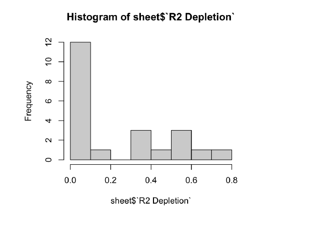
Residual plot analysis was also completed for each logistic regression model for each country. See Appendix D for full matrix of Logistic Regression Natural Resource Depletion Residual Plots. Similar to the resource rents residuals, many of the residual plots show random distribution and scattering of points, including the countries of Peru, Gabon, Morocco and Germany. However, the rest of the residual plots show clumping centered around certain locations, significant outliers that do not follow a pattern of randomness and patterns that follow certain shapes within the charts. This suggests that for the countries not included above, it is most likely that the logistic regression model is not likely a good fit for the correlation between the data and is not suggested to be used in further analysis. The good fitting residual plots for the countries listed above suggests a possible fit for the model, but a critical value (possibly another variable or a more complex logarithmic relationship) is needed for the model measure of fit to increase.
With low mean and median R2 values demonstrated by Figure 3 and four random distribution residual plots, it is currently not possible to accept the logarithmic regression model as a fair fit for Natural Resource Rents (percentage of GDP) and GDP per capita. These findings do not show that we can accept the hypothesis proposed earlier, since it rather supports the null hypothesis that there is not a significant logarithmic correlation between the data.
Due to no significant finding found by completing a logistic regression model between both the Natural Resource Rents Percentage or Natural Resource Depletion Percentage in comparison to GDP per Capita for this trial, future analysis and trials will need to be done to find if and how these relationships truly exist. Due to the scope and time restrictions of this project, only a single trial was able to be completed, therefore more trials should be run before a firm conclusion should be made about the relationships in terms of logarithmic regression. Furthermore, more complex models can be used in order to conclude if there is a non logarithmic relationship between the explanatory and response variables. Possible models could include a nonparametric regression model, random forest regression or polynomial regression.
This research set out to explore the relationships between natural resource rents percentages (of GDP), natural resource depletion percentages (of GNI), and GDP per capita using logistic regression analysis across a diverse set of countries. The findings indicate that the correlation between natural resource economics and national wealth is complex and not strongly defined by our models. The analysis, encompassing data from 1970 to 2022, shows low R2 values in most cases, suggesting that only a small portion of the variance in GDP per capita can be explained by changes in natural resource rents and depletion percentages.The study reinforces the complexity of economic systems and the challenges inherent in quantifying the impact of natural resource management on economic outcomes due to the variance of model fitting and residual plots. The broad range of data points and countries included also demonstrates the variability and heterogeneity of economic conditions globally, which can obscure underlying trends.
Although the study did not find significant correlations, it did help suggest future considerations for research in the field of environmental economics including:
The intersection of natural resources and economic outcomes remains a fertile ground for research. Future studies could explore:
By delving into these areas, researchers can contribute to a deeper understanding of how natural resources can be managed to promote sustainable economic growth, aligning with global efforts towards environmental sustainability and economic resilience.
Ahmad, M., Peng, T., Awan, A., & Ahmed, Z. (2023). Policy framework considering resource curse, renewable energy transition, and institutional issues: Fostering sustainable development and sustainable natural resource consumption practices. Resources Policy, 86, 104173. https://doi.org/10.1016/j.resourpol.2023.104173
Correia, M. S. (2019). Sustainability: An overview of the triple bottom line and sustainability implementation. International Journal of Strategic Engineering, 2(1). https://www.researchgate.net/publication/330057873_Sustainability_An_Overview_of_the_Triple_Bottom_Line_and_Sustainability_Implementation
Feng, Y. (1997). Democracy, Political Stability and Economic Growth. British Journal of Political Science, 27(3), 391–418. http://www.jstor.org/stable/194123
Liang, H., Shi, C., Abid, N., & Yu, Y. (2023). Are digitalization and human development discarding the resource curse in emerging economies? Resources Policy, 85, 103844. https://doi.org/10.1016/j.resourpol.2023.103844
Lv, S., Lv, Y., Gao, D., & Liu, L. (2023). The path to green development: The impact of a carbon emissions trading scheme on enterprises' environmental protection investments. Sustainability, 15(16), 12551. https://doi.org/10.3390/su151612551
Sharipov, I. (n.d.). Contemporary dconomic growth models and theories: A literature review. Econstor. https://www.econstor.eu/bitstream/10419/198426/1/ceswp-v07-i3-p759-773.pdf
Solow, R. (n.d.). A contribution to the theory of economic growth. MIT Press. http://piketty.pse.ens.fr/files/Solow1956.pdf
Thomas, V. (2023, May 3). The truth about climate action versus economic growth. Brookings. https://www.brookings.edu/articles/the-truth-about-climate-action-versus-economic-growth/
The World Bank. (n.d.).
Scatterplot Matrix of Logarithmic Total Natural Resource Rents Percentages (of Gross Domestic Product) vs Logarithmic Gross Domestic Product Per Capita
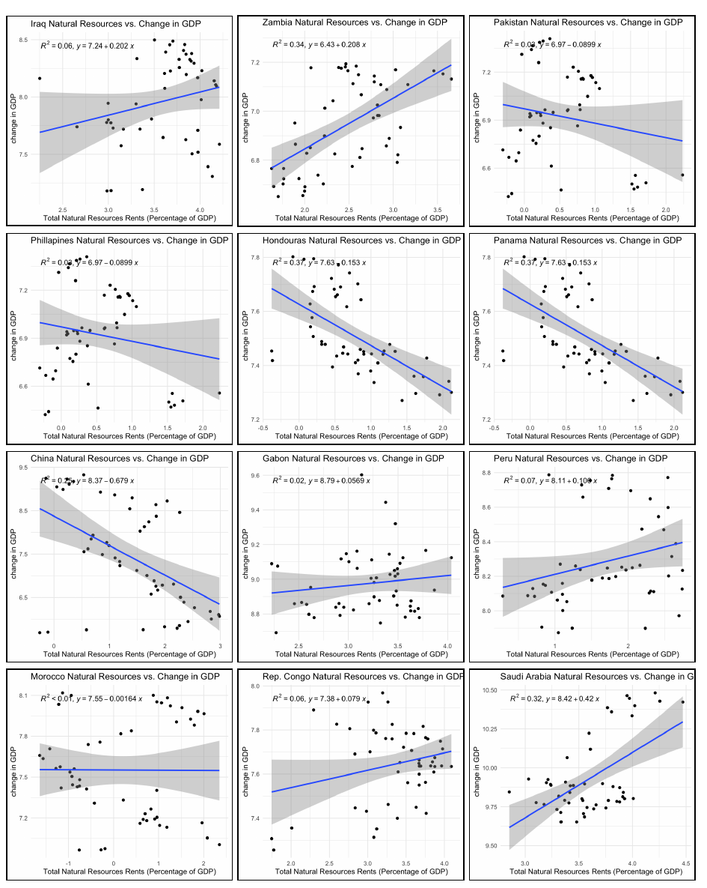
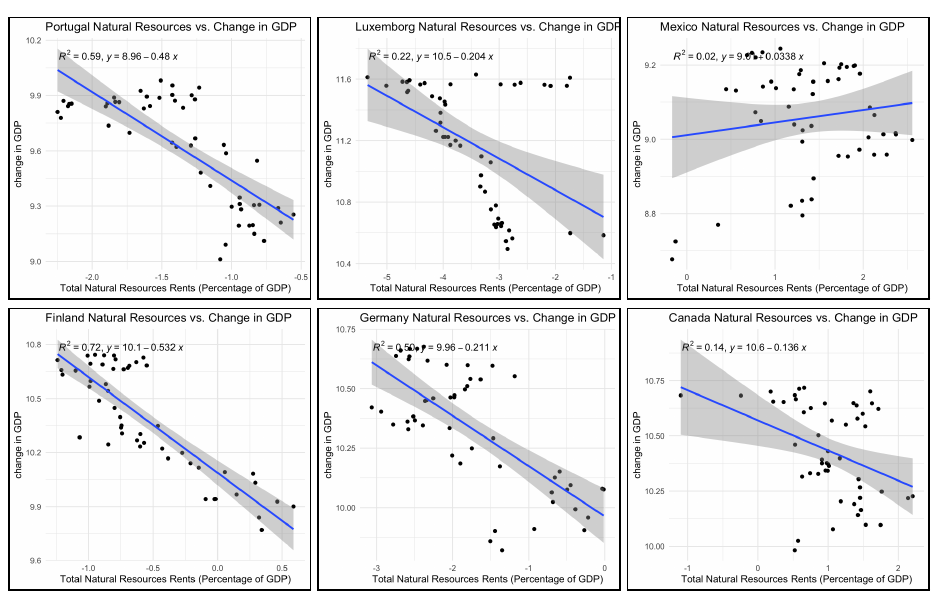
Scatterplot Matrix of Logarithmic Natural Resource Depletion Percentages (of Gross National Income) vs Logarithmic Gross Domestic Product Per Capita
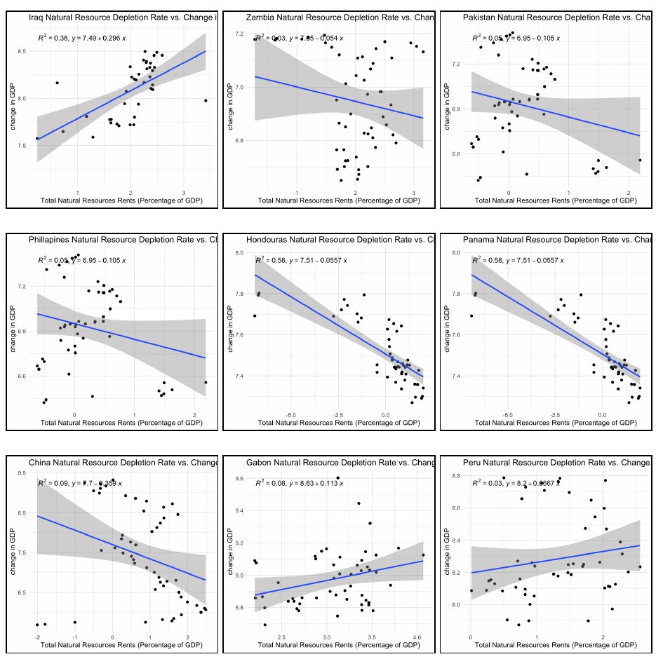
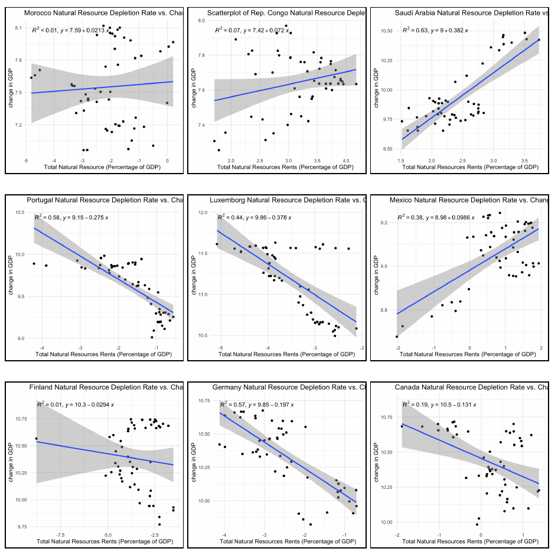
Scatterplot Matrix of Logarithmic Total Natural Resource Rents Percentages (of Gross Domestic Product) Residual Plots
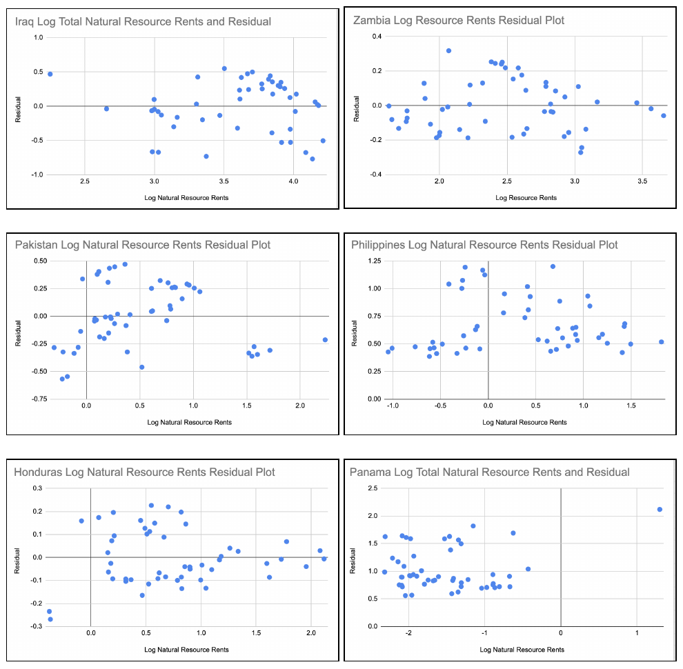
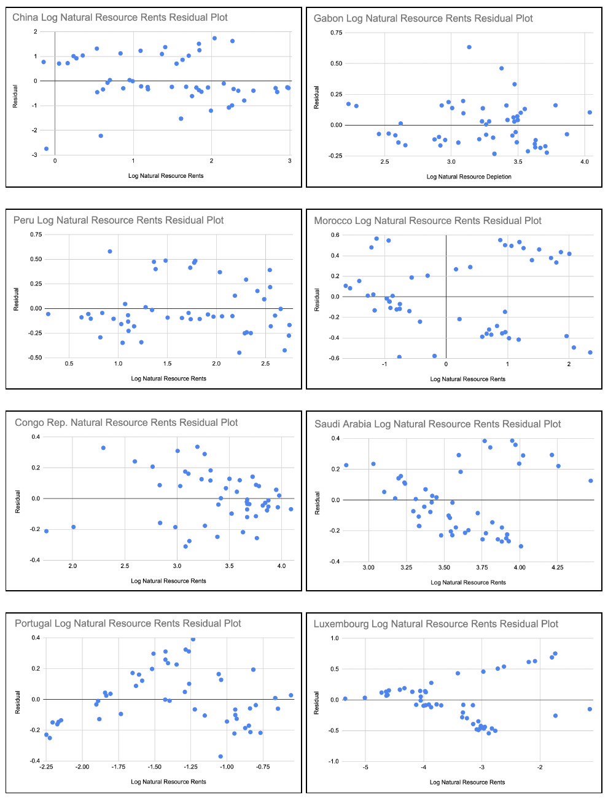
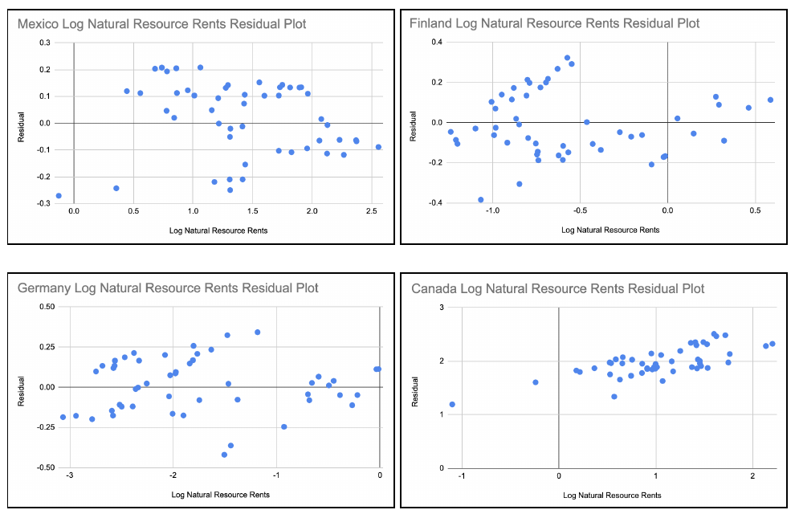
Scatterplot Matrix of Logarithmic Natural Resource Depletion Percentages (of Gross National Income) Residual Plots
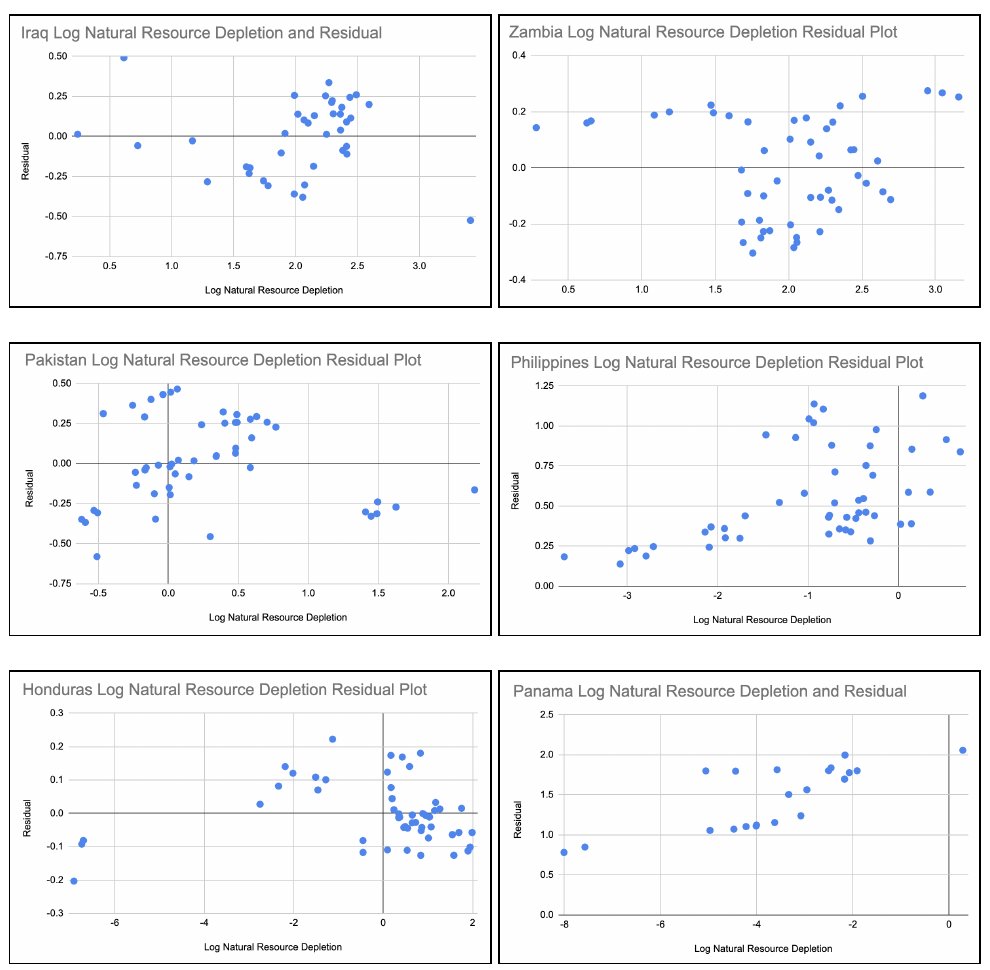
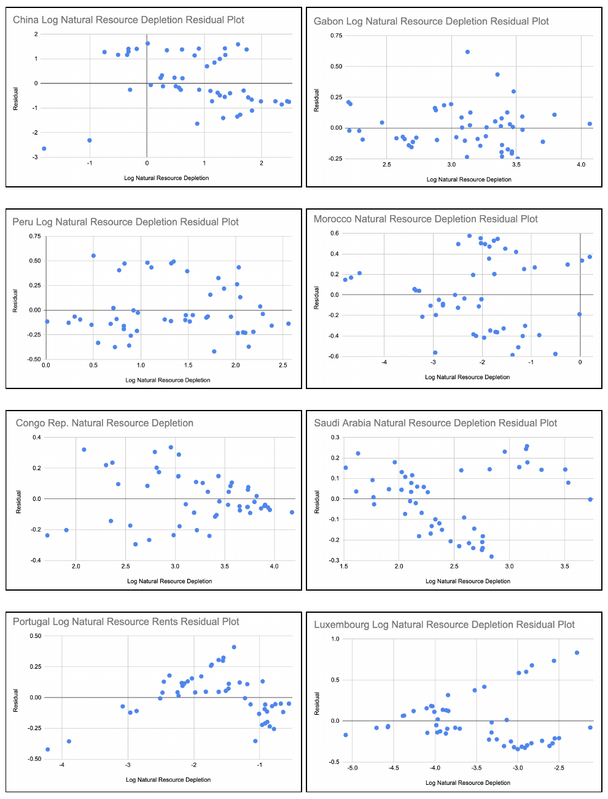
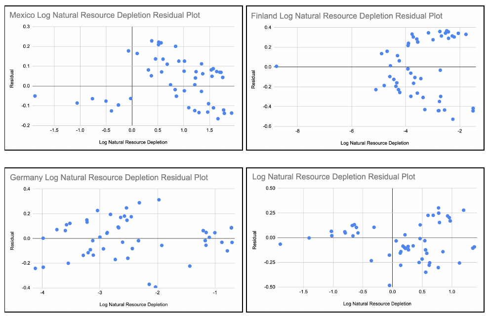